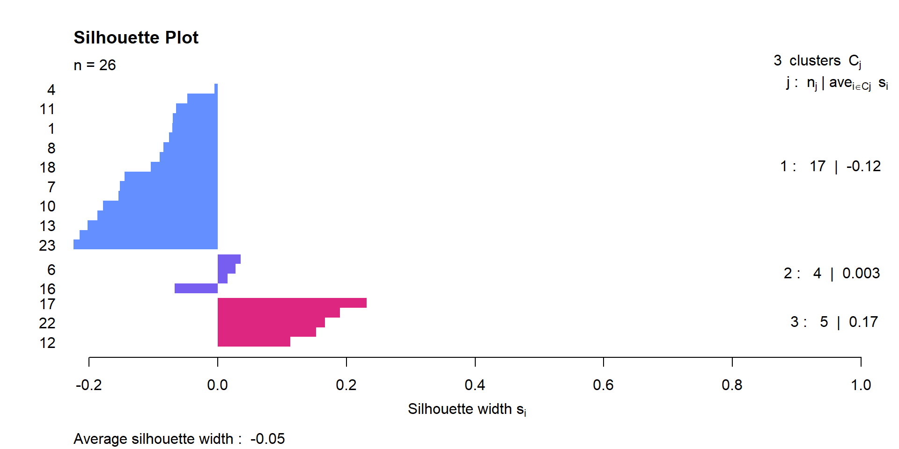
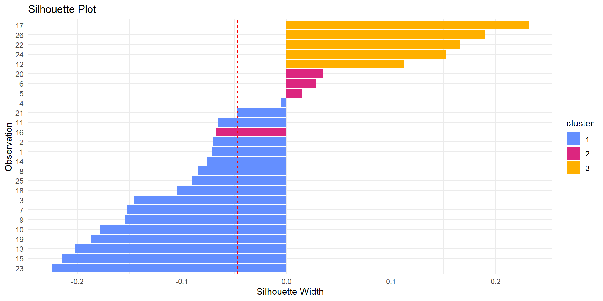
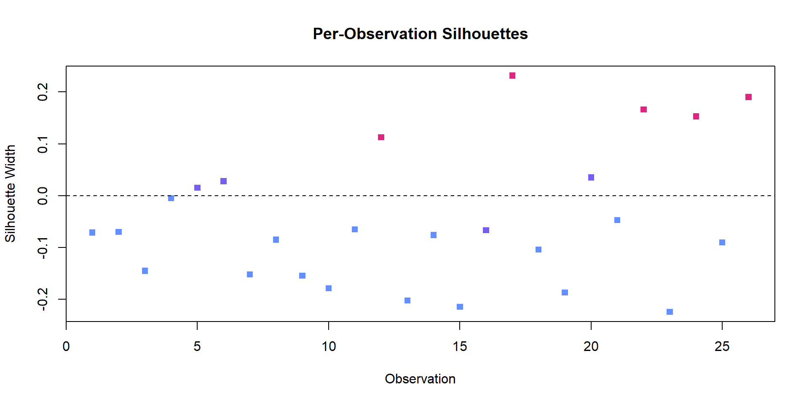

| Sample | Cu | Zn | Pb | Fe | Ni | Ag | Sb | As | Co | Cd | Sn | Te | Bi | Mn | Li | Al | V | Cr | Rb | Sr | Ba |
|---|---|---|---|---|---|---|---|---|---|---|---|---|---|---|---|---|---|---|---|---|---|
| S1 | 73 | 21 | 5.60 | 0.30 | 580 | 146.0 | 55.7 | 9.85 | 2.79 | 12.2 | 9.70 | 0.57 | 41.4 | 19.9 | 5.55 | 11.50 | 3.71 | 3.17 | 0.08 | 1.00 | 0.19 |
| S2 | 87 | 16 | 4.29 | 0.53 | 534 | 199.0 | 132.0 | 36.40 | 8.44 | 20.0 | 4.80 | 1.00 | 72.8 | 20.8 | 2.17 | 4.46 | 1.55 | 1.31 | 0.07 | 0.15 | 0.18 |
| S3 | 73 | 28 | 5.91 | 0.78 | 451 | 131.0 | 105.0 | 23.80 | 8.47 | 16.5 | 6.70 | 0.64 | 29.0 | 15.7 | 4.00 | 8.89 | 3.33 | 2.70 | 0.14 | 8.90 | 0.35 |
| S4 | 80 | 20 | 6.17 | 0.39 | 558 | 171.0 | 70.0 | 11.10 | 4.83 | 11.9 | 9.34 | 0.82 | 60.7 | 23.2 | 6.16 | 13.80 | 6.08 | 4.91 | 0.14 | 0.29 | 0.39 |
| S5 | 78 | 22 | 3.87 | 0.55 | 513 | 156.0 | 67.0 | 14.50 | 6.49 | 5.3 | 7.69 | 0.58 | 58.7 | 23.3 | 3.87 | 11.60 | 4.38 | 3.69 | 0.12 | 0.91 | 0.45 |
| S6 | 81 | 22 | 6.51 | 0.19 | 579 | 159.0 | 60.3 | 8.32 | 1.88 | 9.6 | 8.54 | 0.96 | 61.4 | 15.7 | 2.12 | 4.36 | 2.29 | 1.90 | 0.11 | 0.45 | 0.75 |
| S7 | 75 | 20 | 6.45 | 0.33 | 559 | 130.0 | 107.0 | 211.00 | 3.37 | 11.6 | 17.60 | 0.80 | 51.0 | 22.3 | 1.75 | 5.50 | 2.16 | 1.57 | 0.13 | 0.34 | 0.50 |
| S8 | 82 | 24 | 6.13 | 0.31 | 548 | 160.0 | 75.4 | 9.66 | 3.19 | 7.6 | 6.98 | 0.83 | 58.5 | 23.7 | 1.99 | 13.30 | 3.55 | 2.36 | 0.11 | 1.45 | 0.26 |
| S9 | 80 | 18 | 4.63 | 0.44 | 482 | 159.0 | 109.0 | 24.20 | 5.28 | 30.5 | 3.92 | 0.91 | 91.3 | 23.7 | 1.69 | 8.40 | 2.70 | 1.78 | 0.07 | 0.11 | 0.43 |
| S10 | 72 | 28 | 5.92 | 0.76 | 435 | 105.0 | 111.0 | 23.50 | 8.29 | 16.2 | 6.65 | 0.61 | 27.6 | 19.5 | 1.23 | 6.77 | 2.00 | 1.41 | 0.12 | 0.21 | 0.30 |
| S11 | 76 | 19 | 5.93 | 0.43 | 525 | 138.0 | 53.2 | 15.10 | 5.13 | 8.5 | 8.29 | 0.86 | 54.5 | 12.9 | 0.92 | 6.57 | 1.71 | 1.28 | 0.10 | 0.56 | 0.24 |
| S12 | 69 | 17 | 6.67 | 0.50 | 657 | 141.0 | 50.1 | 13.80 | 4.45 | 8.3 | 8.14 | 0.87 | 55.0 | 13.4 | 1.20 | 3.22 | 1.65 | 1.10 | 0.10 | 3.13 | 0.22 |
| S13 | 78 | 20 | 3.30 | 1.06 | 458 | 189.0 | 549.0 | 197.00 | 1.60 | 17.3 | 38.30 | 1.00 | 181.0 | 86.6 | 1.55 | 9.28 | 3.08 | 2.23 | 0.07 | 0.52 | 1.17 |
| S14 | 74 | 25 | 4.70 | 0.44 | 433 | 81.7 | 88.2 | 14.60 | 5.08 | 20.3 | 1.98 | 0.71 | 26.1 | 29.7 | 1.13 | 6.51 | 2.49 | 1.55 | 0.10 | 0.17 | 0.19 |
| S15 | 84 | 20 | 5.20 | 0.14 | 549 | 171.0 | 107.0 | 20.60 | 1.06 | 23.4 | 4.24 | 0.95 | 92.0 | 12.0 | 0.74 | 3.44 | 1.58 | 1.08 | 0.08 | 0.08 | 0.17 |
| S16 | 82 | 19 | 4.72 | 0.16 | 560 | 162.0 | 103.0 | 19.90 | 1.14 | 22.2 | 4.00 | 0.89 | 82.1 | 12.4 | 0.67 | 21.20 | 2.32 | 2.53 | 0.08 | 0.31 | 0.31 |
| S17 | 77 | 20 | 6.92 | 0.79 | 500 | 177.0 | 153.0 | 54.70 | 9.06 | 31.8 | 65.80 | 0.81 | 27.9 | 5.8 | 0.40 | 3.31 | 0.93 | 0.67 | 0.08 | 7.27 | 0.35 |
| S18 | 83 | 19 | 4.57 | 0.44 | 515 | 158.0 | 111.0 | 22.10 | 5.09 | 28.4 | 3.80 | 0.99 | 89.3 | 21.5 | 0.52 | 4.08 | 1.69 | 1.01 | 0.09 | 11.80 | 0.27 |
| S19 | 71 | 28 | 5.25 | 0.72 | 494 | 114.0 | 101.0 | 38.10 | 6.14 | 18.5 | 10.40 | 0.72 | 33.6 | 17.7 | 1.49 | 8.36 | 2.61 | 1.54 | 0.16 | 4.89 | 3.37 |
| S20 | 76 | 19 | 6.31 | 0.41 | 535 | 139.0 | 51.5 | 14.00 | 4.41 | 8.2 | 8.11 | 0.97 | 56.3 | 13.4 | 0.62 | 2.91 | 1.34 | 0.79 | 0.06 | 0.42 | 0.40 |
| S21 | 74 | 21 | 4.88 | 0.49 | 423 | 80.0 | 68.0 | 14.40 | 5.67 | 22.5 | 1.99 | 0.91 | 25.3 | 26.3 | 0.42 | 2.49 | 0.97 | 0.59 | 0.07 | 0.70 | 0.23 |
| S22 | 71 | 21 | 6.00 | 0.93 | 606 | 142.0 | 175.0 | 55.30 | 15.03 | 11.8 | 42.00 | 0.56 | 46.3 | 25.7 | 0.85 | 11.60 | 2.82 | 2.19 | 0.12 | 15.10 | 3.61 |
| S23 | 72 | 22 | 6.18 | 0.33 | 623 | 121.0 | 67.2 | 9.12 | 2.61 | 11.6 | 9.07 | 0.58 | 40.1 | 18.3 | 0.73 | 5.38 | 2.52 | 1.45 | 0.11 | 0.08 | 0.14 |
| S24 | 76 | 18 | 6.49 | 0.28 | 645 | 172.0 | 52.5 | 9.43 | 1.94 | 9.1 | 9.75 | 1.00 | 79.7 | 14.6 | 0.40 | 3.76 | 1.39 | 0.86 | 0.08 | 0.15 | 0.28 |
| S25 | 78 | 18 | 1.05 | 0.75 | 496 | 162.0 | 32.2 | 56.70 | 0.34 | 5.0 | 4.10 | 0.91 | 49.8 | 29.5 | 0.61 | 5.31 | 2.02 | 1.27 | 0.09 | 0.17 | 0.32 |
| S26 | 75 | 20 | 6.35 | 0.45 | 543 | 137.0 | 57.1 | 9.50 | 4.95 | 11.2 | 8.29 | 0.85 | 58.6 | 23.4 | 0.49 | 14.60 | 1.69 | 1.10 | 0.07 | 0.19 | 0.25 |
| S27 | 72 | 20 | 6.48 | 0.41 | 558 | 140.0 | 54.5 | 9.10 | 4.34 | 10.6 | 8.19 | 0.89 | 57.0 | 18.4 | 0.36 | 3.05 | 1.49 | 0.85 | 0.07 | 6.73 | 0.26 |
| S28 | 76 | 21 | 5.91 | 0.83 | 471 | 172.0 | 139.0 | 46.50 | 8.88 | 54.7 | 1.89 | 0.66 | 27.0 | 12.5 | 0.41 | 6.32 | 2.03 | 1.60 | 0.09 | 4.00 | 4.59 |
| S29 | 69 | 28 | 6.57 | 0.81 | 492 | 121.0 | 122.0 | 26.40 | 7.79 | 18.8 | 9.63 | 0.71 | 33.3 | 22.1 | 0.53 | 5.25 | 2.74 | 1.81 | 0.13 | 0.93 | 0.38 |
| S30 | 86 | 16 | 4.61 | 0.57 | 467 | 196.0 | 158.0 | 37.70 | 10.40 | 19.8 | 4.90 | 0.99 | 74.2 | 22.5 | 0.19 | 2.16 | 1.13 | 0.67 | 0.07 | 0.28 | 0.20 |
| S31 | 77 | 25 | 5.25 | 0.73 | 400 | 89.0 | 101.0 | 18.40 | 9.98 | 22.6 | 2.89 | 0.68 | 26.3 | 32.6 | 0.31 | 3.96 | 1.80 | 1.05 | 0.10 | 0.14 | 0.24 |
| S32 | 82 | 22 | 7.22 | 0.72 | 461 | 148.0 | 148.0 | 42.80 | 9.05 | 53.8 | 2.84 | 0.95 | 39.1 | 14.0 | 0.39 | 4.74 | 2.51 | 1.55 | 0.12 | 0.18 | 0.31 |
| S33 | 82 | 20 | 5.14 | 0.45 | 492 | 166.0 | 117.0 | 22.80 | 5.26 | 28.5 | 3.59 | 1.00 | 87.4 | 21.8 | 0.14 | 2.02 | 1.00 | 0.59 | 0.06 | 0.33 | 0.16 |
| S34 | 80 | 16 | 4.48 | 0.47 | 468 | 187.0 | 132.0 | 33.80 | 7.64 | 18.8 | 4.52 | 1.02 | 70.4 | 18.7 | 0.14 | 2.18 | 0.89 | 0.57 | 0.06 | 0.09 | 0.19 |
| S35 | 78 | 19 | 6.62 | 0.24 | 539 | 174.0 | 57.4 | 9.02 | 1.91 | 8.9 | 9.78 | 0.99 | 80.3 | 14.4 | 0.17 | 2.63 | 1.31 | 0.72 | 0.08 | 0.24 | 0.17 |
| S36 | 78 | 20 | 7.71 | 0.18 | 683 | 175.0 | 64.8 | 7.04 | 2.36 | 6.4 | 6.57 | 1.00 | 62.0 | 14.2 | 0.30 | 5.24 | 2.19 | 1.97 | 0.11 | 0.42 | 0.23 |
| S37 | 75 | 23 | 6.63 | 0.23 | 464 | 131.0 | 66.0 | 7.51 | 3.35 | 9.7 | 5.62 | 0.65 | 40.6 | 15.2 | 0.10 | 2.68 | 1.23 | 1.02 | 0.09 | 2.88 | 0.12 |
| S38 | 90 | 21 | 2.33 | 0.38 | 656 | 165.0 | 125.0 | 201.00 | 0.90 | 24.8 | 15.70 | 1.75 | 151.0 | 79.1 | 0.40 | 8.97 | 3.95 | 2.34 | 0.22 | 2.20 | 0.42 |
It’s just rocks and metal … ing-it
Gaia Smith and Alice Thompson
1. Introduction


2. EDA
2.1 Analyzing the raw data
2.1 Analyzing the raw data
| Element | Mean | SD | Min | Q1 | Median | Q3 | Max | IQR | Kurtosis |
|---|---|---|---|---|---|---|---|---|---|
| Cu | 77.42 | 4.98 | 69.00 | 74.00 | 77.00 | 80.75 | 90.00 | 6.75 | 2.75 |
| Zn | 20.95 | 3.25 | 16.00 | 19.00 | 20.00 | 22.00 | 28.00 | 3.00 | 3.19 |
| Pb | 5.50 | 1.34 | 1.05 | 4.70 | 5.92 | 6.47 | 7.71 | 1.77 | 4.94 |
| Fe | 0.50 | 0.23 | 0.14 | 0.33 | 0.44 | 0.72 | 1.06 | 0.39 | 2.43 |
| Ni | 525.05 | 69.56 | 400.00 | 468.75 | 520.00 | 558.75 | 683.00 | 90.00 | 2.60 |
| Ag | 149.07 | 29.59 | 80.00 | 132.50 | 157.00 | 171.00 | 199.00 | 38.50 | 2.96 |
| Sb | 105.16 | 82.28 | 32.20 | 61.42 | 101.00 | 120.75 | 549.00 | 59.33 | 23.59 |
| As | 36.81 | 51.35 | 7.04 | 10.16 | 20.25 | 37.38 | 211.00 | 27.21 | 9.24 |
| Co | 5.23 | 3.25 | 0.34 | 2.66 | 5.02 | 7.75 | 15.03 | 5.10 | 3.41 |
| Cd | 17.81 | 11.38 | 5.00 | 9.62 | 16.35 | 22.42 | 54.70 | 12.80 | 6.22 |
| Sn | 10.17 | 12.43 | 1.89 | 4.14 | 7.34 | 9.56 | 65.80 | 5.42 | 13.11 |
| Te | 0.86 | 0.21 | 0.56 | 0.71 | 0.88 | 0.98 | 1.75 | 0.27 | 9.49 |
| Bi | 60.49 | 32.61 | 25.30 | 39.35 | 56.65 | 73.85 | 181.00 | 34.50 | 7.18 |
| Mn | 22.54 | 15.51 | 5.80 | 14.45 | 19.70 | 23.37 | 86.60 | 8.92 | 13.07 |
| Li | 1.23 | 1.44 | 0.10 | 0.40 | 0.64 | 1.54 | 6.16 | 1.14 | 6.93 |
| Al | 6.57 | 4.29 | 2.02 | 3.34 | 5.28 | 8.77 | 21.20 | 5.43 | 4.87 |
| V | 2.23 | 1.09 | 0.89 | 1.50 | 2.02 | 2.68 | 6.08 | 1.17 | 5.52 |
| Cr | 1.60 | 0.92 | 0.57 | 1.01 | 1.43 | 1.95 | 4.91 | 0.94 | 5.94 |
| Rb | 0.10 | 0.03 | 0.06 | 0.07 | 0.09 | 0.12 | 0.22 | 0.04 | 6.34 |
| Sr | 2.05 | 3.51 | 0.08 | 0.18 | 0.42 | 2.01 | 15.10 | 1.83 | 7.66 |
| Ba | 0.59 | 1.00 | 0.12 | 0.21 | 0.28 | 0.40 | 4.59 | 0.19 | 11.17 |
2.1 Analyzing the Raw data

2.1.1 Inconsistencies in Percentages
| Element | Mean | SD | Median | Min | Max |
|---|---|---|---|---|---|
| Cu | 77.42 | 4.98 | 77.00 | 69.00 | 90.00 |
| Zn | 20.95 | 3.25 | 20.00 | 16.00 | 28.00 |
| Pb | 5.50 | 1.34 | 5.92 | 1.05 | 7.71 |
| Fe | 0.50 | 0.23 | 0.44 | 0.14 | 1.06 |
| percentage_total | 104.36 | 4.28 | 104.40 | 93.17 | 113.71 |
2.2 initial QQ-plots

2.2 initial QQ-plots

2.2 initial QQ-plots

2.2 initial QQ-plots

2.3 Performing Log Transformations

2.3 log Transformed QQ-plots

2.3 log Transformed QQ-plots

2.3 log Transformed QQ-plots

2.3 log Transformed QQ-plots

2.4 Henze-Zirkler Test For Multivariate Normality
\[ \begin{aligned} \mathcal{H}_0 :& \text{ The data follows a multivariate normal distribution}, \\ \mathcal{H}_1 :& \text{ The data does not follow a multivariate normal distribution}. \end{aligned} \]
2.4 Henze-Zirkler Test For Multivariate Normality
| Test | Statistic | p.value | Method | MVN |
|---|---|---|---|---|
| Henze-Zirkler | 1 | 0.07 | asymptotic | ✓ Normal |
2.5 Performing Mad Transformations
| Element | Median | MAD | Skewness | Kurtosis |
|---|---|---|---|---|
| Ag | 5.06 | 0.15 | -0.32 | 3.08 |
| Al | 2.05 | 0.52 | 0.00 | 1.84 |
| As | 2.78 | 0.62 | 1.72 | 5.49 |
| Ba | 0.30 | 0.11 | 0.82 | 3.16 |
| Bi | 4.09 | 0.10 | -0.79 | 3.00 |
| Cd | 2.53 | 0.46 | 0.40 | 2.48 |
| Co | 1.81 | 0.50 | -0.45 | 2.40 |
| Cr | 1.02 | 0.28 | 0.88 | 2.66 |
| Cu | 4.37 | 0.06 | -0.05 | 2.33 |
| Fe | 0.36 | 0.11 | 0.16 | 2.44 |
| Li | 1.10 | 0.43 | 0.72 | 2.52 |
| Element | Median | MAD | Skewness | Kurtosis |
|---|---|---|---|---|
| Mn | 3.02 | 0.56 | 0.57 | 3.46 |
| Ni | 6.23 | 0.13 | -0.13 | 2.02 |
| Pb | 1.80 | 0.10 | -0.44 | 3.11 |
| Rb | 0.08 | 0.01 | 1.32 | 3.87 |
| Sb | 4.66 | 0.40 | 1.28 | 4.44 |
| Sn | 1.93 | 0.99 | 0.53 | 1.75 |
| Sr | 0.47 | 0.53 | 0.54 | 1.54 |
| Te | 0.64 | 0.07 | -0.87 | 2.61 |
| V | 1.09 | 0.32 | -0.28 | 1.64 |
| Zn | 3.04 | 0.07 | 1.36 | 3.52 |
2.6 Henze-Zirkler Test for Multivariate Normality
HZ test on OG data:
Henze_Zirkler Test Results: Test Statistic p.value Method MVN
1 Henze-Zirkler 1.001 <0.001 asymptotic ✗ Not normalHZ test after all transformations:
Henze_Zirkler Test Results: Test Statistic p.value Method MVN
1 Henze-Zirkler 1 0.055 asymptotic ✓ Normal2.7 Correlation plots before and after


3. LDA
3.1 PAM - Linear analysis

3.2 Cluster Analysis using Manhattan Distance

3.2 UMAP

3.3 Fuzzy Cluster Analysis
| Clus 1 | Clus 2 | Clus 3 | |
|---|---|---|---|
| 2 | 0.3808610 | 0.3352282 | 0.2839108 |
| 3 | 0.3994904 | 0.2979197 | 0.3025900 |
| 5 | 0.3951292 | 0.3486303 | 0.2562405 |
| 6 | 0.3964214 | 0.3005436 | 0.3030350 |
| 8 | 0.3548860 | 0.4016243 | 0.2434897 |
| 9 | 0.3448716 | 0.3954432 | 0.2596851 |
| 10 | 0.3987019 | 0.3428947 | 0.2584034 |
| 11 | 1.0000000 | 0.0000000 | 0.0000000 |
| 12 | 0.4590163 | 0.1666023 | 0.3743813 |
| 15 | 0.4064680 | 0.2860789 | 0.3074530 |
| 16 | 0.3951507 | 0.3586247 | 0.2462246 |
| 18 | 0.2977457 | 0.2699617 | 0.4322926 |
| 20 | 0.4236822 | 0.2260882 | 0.3502296 |
The default value alpha=1 has been set | Clus 1 | Clus 2 | Clus 3 | |
|---|---|---|---|
| 23 | 0.4050991 | 0.3441944 | 0.2507065 |
| 24 | 0.3767881 | 0.2828230 | 0.3403890 |
| 26 | 0.0000000 | 1.0000000 | 0.0000000 |
| 27 | 0.0000000 | 0.0000000 | 1.0000000 |
| 29 | 0.3759377 | 0.3380885 | 0.2859738 |
| 30 | 0.3446866 | 0.3239112 | 0.3314023 |
| 31 | 0.3267719 | 0.3715135 | 0.3017146 |
| 32 | 0.3975712 | 0.3146435 | 0.2877853 |
| 33 | 0.3103118 | 0.3264398 | 0.3632485 |
| 34 | 0.3529295 | 0.3142389 | 0.3328316 |
| 35 | 0.3675679 | 0.2596316 | 0.3728005 |
| 36 | 0.4021137 | 0.2949173 | 0.3029690 |
| 37 | 0.3269203 | 0.2356503 | 0.4374294 |
3.3 Fuzzy Analysis

3.3 Fuzzy Analysis

3.3 Fuzzy Analysis

3.3 Fuzzy Analysis

3.3 Fuzzy Analysis

4. Results
4.1 ARI Heat-map comparing the different methods

5. Discussion
comparing to the Caponetti, Armetta, Martino, et al. (2017) study
What were the limitations of this study
What further research could be done?
6. References
Angelucci, O. (2026). The Sunken Ship of Gela: The Ancient Secret of the Sicilian Sea — medium.com. https://medium.com/ash-and-devotion/the-sunken-ship-of-gela-the-ancient-secret-of-the-sicilian-sea-796f56d2dcc6.
Caley, E. R. (1967). Investigations on the origin and manufacture of orichalcum. In Archaeological chemistry: A symposium (pp. 59–74). University of Pennsylvania Press. http://www.jstor.org/stable/j.ctv512vfn.7
Caponetti, E., Armetta, F., Brusca, L., Chillura Martino, D., Saladino, M. L., Ridolfi, S., Chirco, G., Berrettoni, M., Conti, P., Bruno, N., & Tusa, S. (2017). A multivariate approach to the study of orichalcum ingots from the underwater gela’s archaeological site. Microchem. J., 135, 163–170.
Caponetti, E., Armetta, F., Martino, D. C., Saladino, M. L., Ridolfi, S., Chirco, G., Berrettoni, M., Conti, P., Bruno, N., & Tusa, S. (2017). First discovery of orichalcum ingots from the remains of a 6Th century BC shipwreck near gela (sicily) seabed.
Frery, A. C., Gomez, L., & Medeiros, A. C. (2020). A badging system for reproducibility and replicability in remote sensing research. IEEE J. Sel. Top. Appl. Earth Obs. Remote Sens., 13, 4988–4995.
Leys, C., Ley, C., Klein, O., Bernard, P., & Licata, L. (2013). Detecting outliers: Do not use standard deviation around the mean, use absolute deviation around the median. J. Exp. Soc. Psychol., 49(4), 764–766.
Nichols, D. Coloring for Colorblindness — davidmathlogic.com. https://davidmathlogic.com/colorblind/#%23{D}81{B}60-%231{E}88{E}5-%23{F}{F}{C}107-%23004{D}40-%2324e9fb.
Nutter, N. (2025). Gela 1 Wreck: Archaic Greek Ship Discovery, Sewn-Plank Technology & Trade (500–480 BC) — nuttersworld.com. https://nuttersworld.com/iron-age-shipwrecks-mediterranean-sea/gela-1/.
Vungarala, S. K. (2023). PCA vs LDA — No more confusion! — seshu8hachi. https://medium.com/@seshu8hachi/pca-vs-lda-no-more-confusion-fc21fb8d06e9.
7. Any Questions
STAT394 - Group 3 - VUW 2026